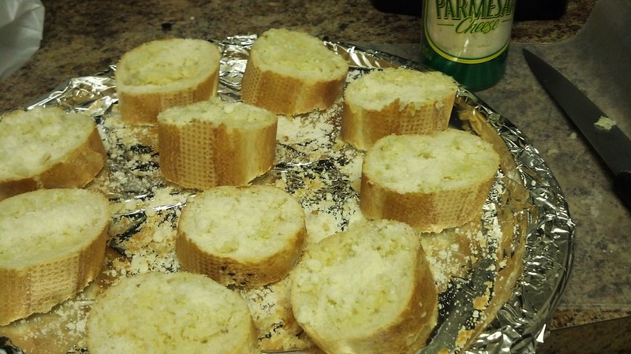

Parmesan Garlic Bread

This garlicky parmesan bread is great with most Italian dishes.
Quick, simple, and straight to the point. What more could you ask for!
Ingredients
- 1/2 cup butter, melted
- 1 tablespoon grated Parmesan cheese, or more to taste
- 1 teaspoon garlic salt
- 1/4 teaspoon dried rosemary
- 1/8 teaspoon dried basil
- 1/8 teaspoon dried thyme
- 1/8 teaspoon garlic powder
- 1 (1 pound) loaf French bread, halved lengthwise
Steps
- Preheat the oven to 300 degrees F (150 degrees C).
- Mix butter, Parmesan, garlic salt, rosemary, basil, thyme, and garlic powder together in a small bowl. Spread 1/2 of the mixture onto each piece of French bread. Sprinkle with additional Parmesan cheese if desired. Transfer bread, seasoned-side up, to a medium baking sheet.
- Bake in the preheated oven until the edges are very lightly browned, 10 to 12 minutes.
Home